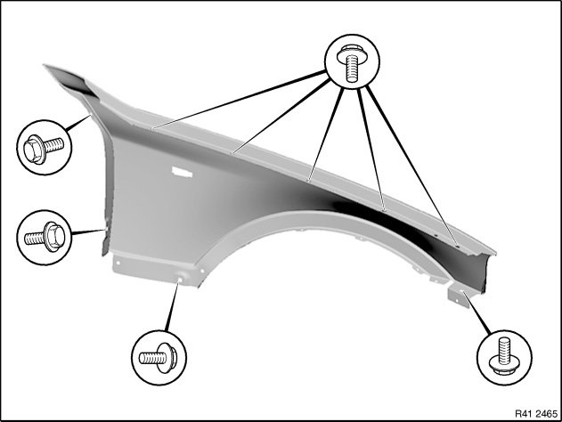

Front Fender: Service and Repair
41 35 000 Removing and installing/replacing side panel, front left or right
For stripping and rigging operations, refer to texts on KSD CD (FR number 41 35 000).
CAUTION: Do not damage adjoining body parts.
Installation information:
E83 gap dimensions serve as basis for adjustment tasks.

Interior view of front side panel
Open screws.